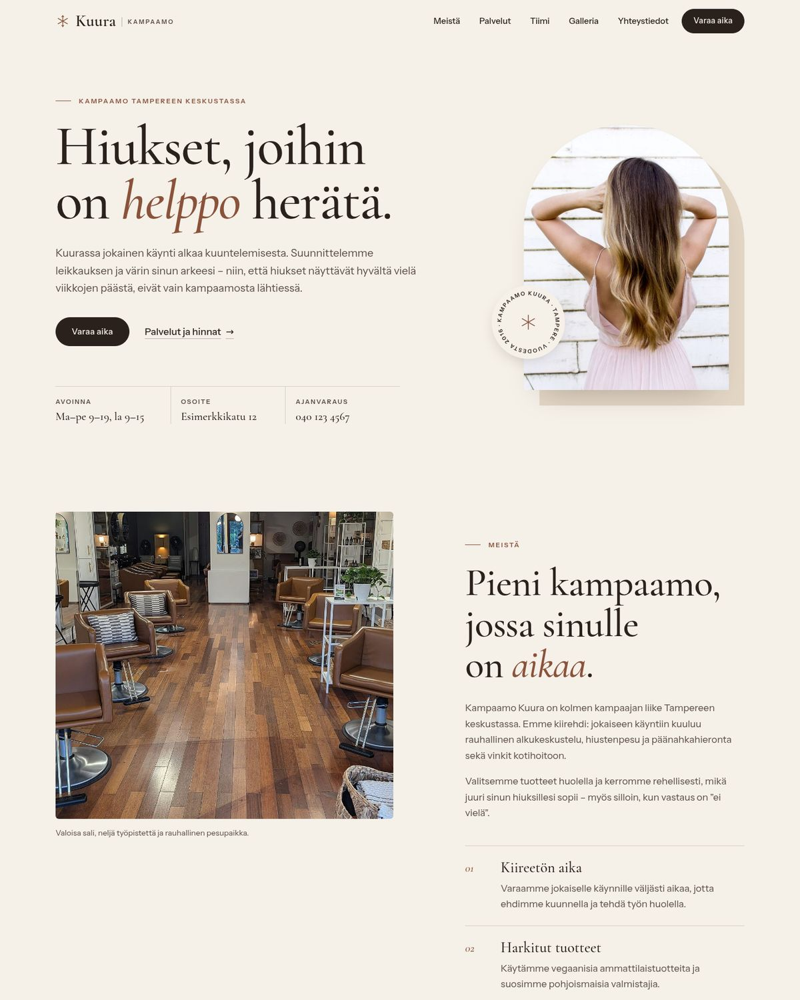
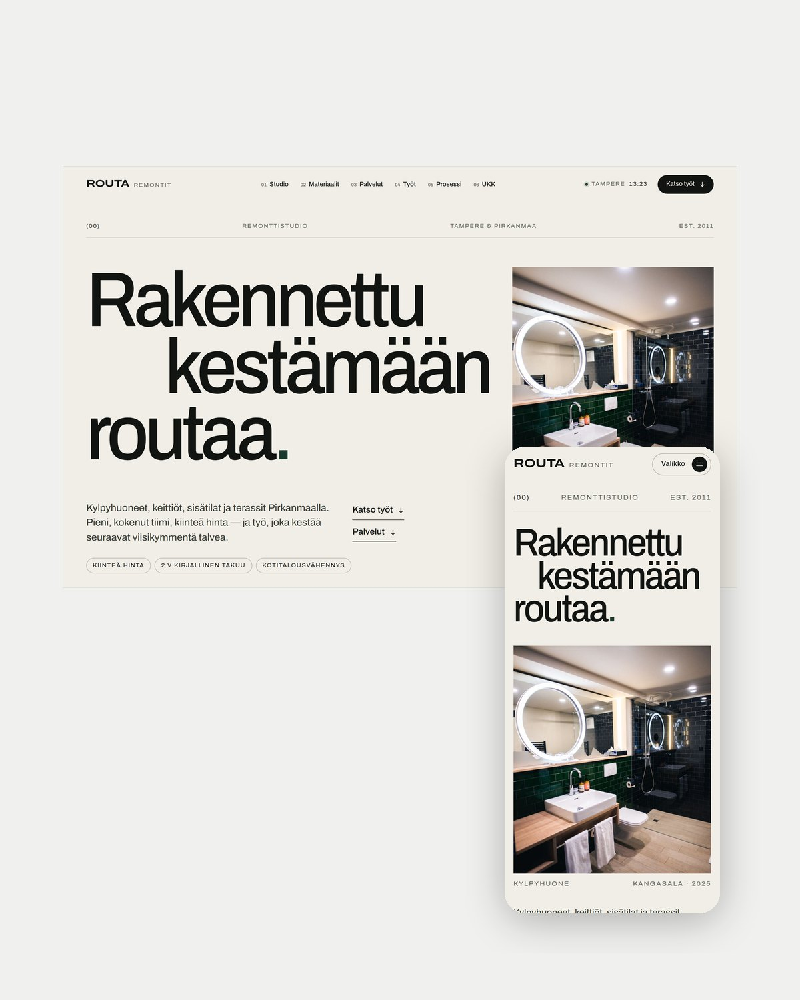
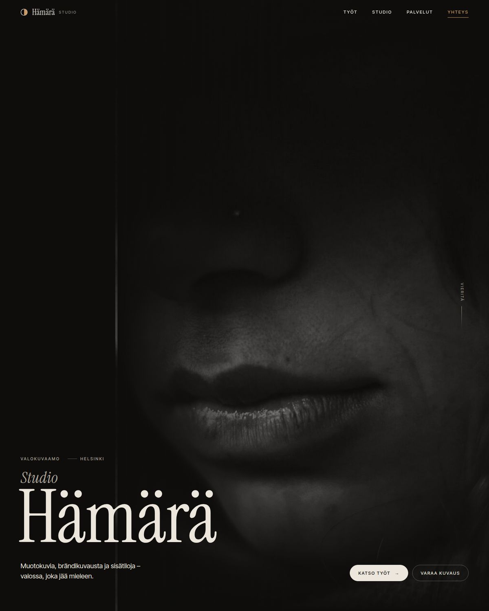

Ville Saarela
Verkkosivut yrityksille
Asiakkaasi googlaa sinut ennen kuin soittaa.
Mitä hän löytää?
Hakutulokset
Ei verkkosivuja. Sivut vuodelta 2012. Pelkkä Facebook.
Hän soittaa kilpailijalle.
Etkä sinä edes tiedä siitä.
Korjataan se.




Kampaamo Kuura01 — Kampaamo
Lähde Arkkitehdit02 — Arkkitehdit
Routa Remontit03 — Remontit
Studio Hämärä04 — Valokuvaaja

Ville SaarelaSuunnittelu & toteutus
Verkkosivut, jotka tekevät töitä.
Otan vastaan uusia projekteja
Pyydä maksuton tarjous.
Linkki biossa ↗
01 / 08
Suomi — 2026